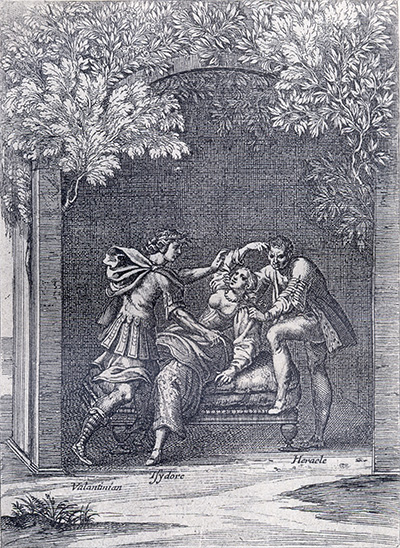
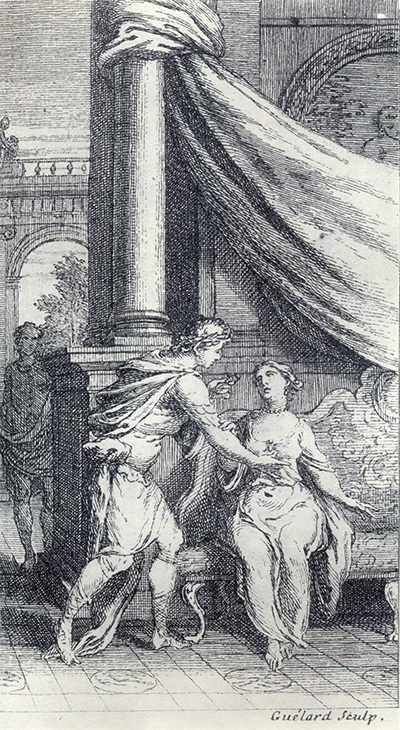

L'Astrée
d'Honoré d'Urfé
Deuxième partie
Livre 12

Valentinien viole Isidore avec l'aide d'Héracle (II, 12, 818)
L'AstréeII, Édition Vaganay**, 1925Valentinien viole Isidore avec l'aide d'Héracle (II, 12, 818)
(Voir Illustrations)

Gravure signée Guélard
Valentinien s'approche d'Isidore ; Héracle est encore dans l'ombre (II, 12, 809)
L'AstréeII, 12. Édition Vaganay**, 1925Gravure signée Guélard
Valentinien s'approche d'Isidore ; Héracle est encore dans l'ombre (II, 12, 809)
(Voir Illustrations)
Édition de 1610, p. 775.
Édition de Vaganay, p. 487.

Votre désir est trop juste, courtois Silvandre
(il avait appris que je m'appelais ainsi), pour ne
lui satisfaire. Car il est très raisonnable que
vous sachiez à qui vous avez sauvé la vie, et quelle
est la condition de ceux qui
SONNET.
D'une mouche sur les lèvres de sa
Dame endormie.
et qu'aussi feindre de la jalousie leur donne bien souvent occasion de redoubler leurs faveurs, je fis semblant d'être un peu jaloux de Valentinien et de me réjouir de son départ. Et je fis des vers sur ce sujet que je chantai devant elle à la première occasion qui se présenta. Ils étaient tels :
SONNET.
Sur le départ d'un Rival.
SONNET
SUR UN ADIEU.
Que n'eussé-je point entrepris, si la force eût égalé ma volonté, ou seulement si mes blessures me l'eussent permis ? Mais, hélas ! j'étais en état que malaisément eussé-je pu faire mal
en mieux juger, et que la requête devait être telle :
REQUÊTE
Qui se présente au conseil des Six-Cents,
demandant le
poison.
DEMANDE D'URSACE.
il ne changea de voix ni de couleur. Et peu après Olimbre se découvrant la tête, dit ainsi :
DEMANDE D'OLIMBRE.
JUGEMENT
Du Conseil des Six-Cents.
ÉPITAPHE
D'UN HOMME HEUREUX.
FIN
De la deuxième partie d'Astrée de Messire
Honoré d'Urfé.

Livre 11

Troisième partie
Référence électronique :
document.write('"'+document.title.substr(0, document.title.indexOf("-")-1)+'". '+"Dernière mise à jour : "+ExtractDate(document.lastModified)+".")Deux visages de L'Astrée.
©2005-2020 E. Henein.
URL :
var today = new Date();
document.write(document.URL +
"<br>Consulté le : " + today.toLocaleDateString("fr-FR") + ".");
var _gaq = _gaq || [];
_gaq.push(['_setAccount', 'UA-19288475-1']);
_gaq.push(['_trackPageview']);
(function() {
var ga = document.createElement('script'); ga.type = 'text/javascript'; ga.async = true;
ga.src = ('https:' == document.location.protocol ? 'https://ssl' : 'http://www') + '.google-analytics.com/ga.js';
var s = document.getElementsByTagName('script')[0]; s.parentNode.insertBefore(ga, s);
})();
Deux visages de L'Astrée.
©2005-2019 Eglal Henein. Creative Commons 4 
Édition critique de la première partie de L'Astrée (1607, 1621)
mise en ligne le 9 avril 2007
Édition critique de la deuxième partie de L'Astrée (1610, 1621)
mise en ligne le 10 octobre 2010
Édition critique de la troisième partie de L'Astrée (1619, 1621)
mise en ligne le 1er novembre 2014
Édition critique de la quatrième partie de L'Astrée (1624)
mise en ligne le 15 janvier 2019
document.write("Dernière mise à jour : "+ExtractDate(document.lastModified))